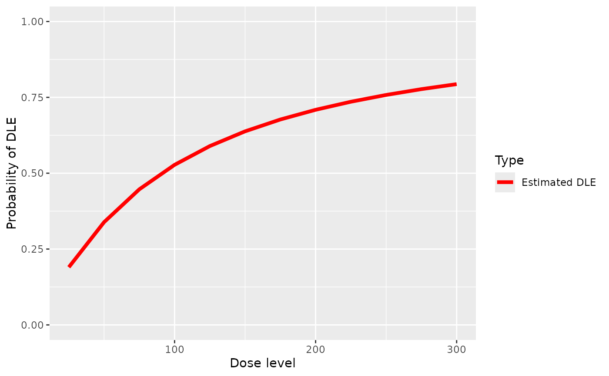

Plot of the fitted dose-tox based with a given pseudo DLE model and data without samples
Source:R/Samples-methods.R
plot-Data-ModelTox-method.RdPlot of the fitted dose-tox based with a given pseudo DLE model and data without samples
Usage
# S4 method for Data,ModelTox
plot(
x,
y,
xlab = "Dose level",
ylab = "Probability of DLE",
showLegend = TRUE,
...
)Examples
##plot the dose-DLE curve given a pseudo DLE model using data without samples
##data must be of 'Data' class
##define the data
data<-Data(x=c(25,50,50,75,100,100,225,300),y=c(0,0,0,0,1,1,1,1),
doseGrid=seq(25,300,25))
#> Used default patient IDs!
#> Used best guess cohort indices!
##model must be from 'ModelTox' class e.g 'LogisticIndepBeta' class model
##define the model (see LogisticIndepBeta example)
model <-LogisticIndepBeta(binDLE=c(1.05,1.8),DLEweights=c(3,3),DLEdose=c(25,300),data=data)
## plot the dose-DLE curve
## 'x' is the data and 'y' is the model in plot
plot(x=data,y=model)
